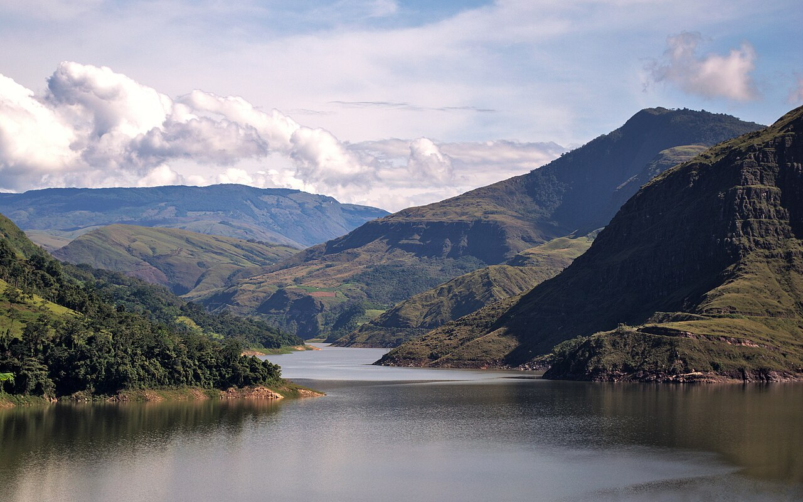
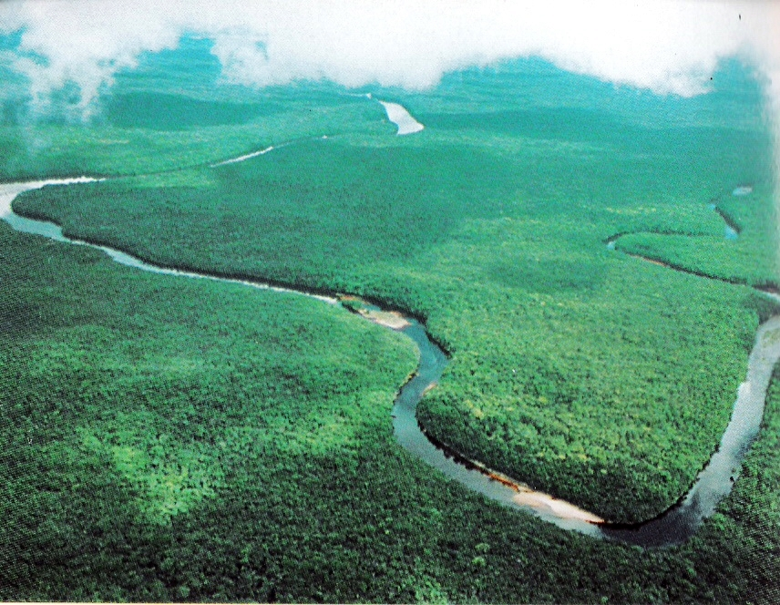
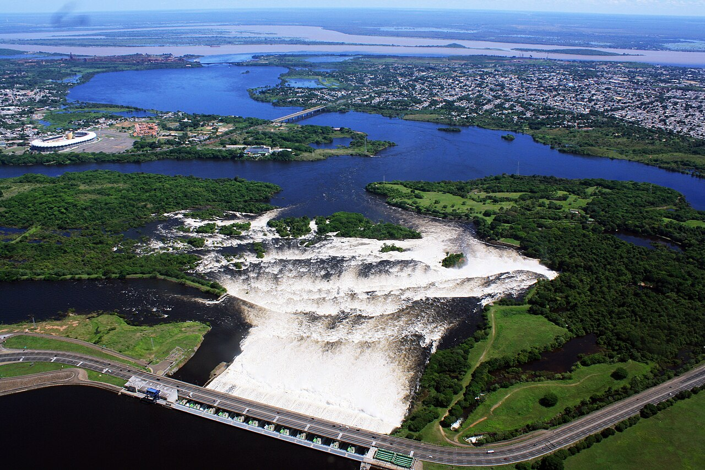
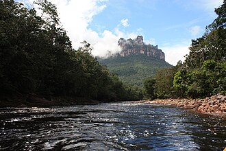
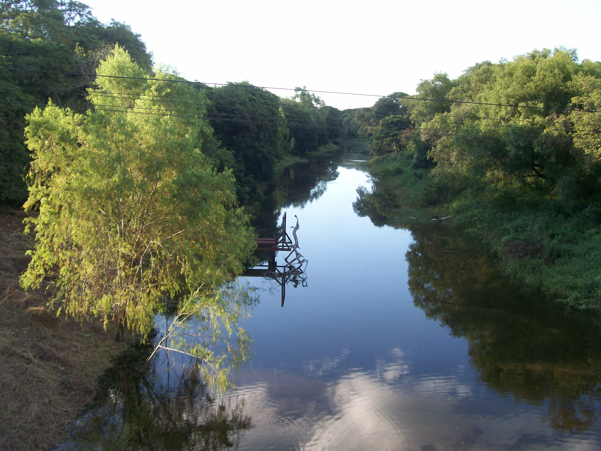

VENEZUELA'S RIVERS
Venezuela's river systems are among the most powerful, ancient, and biologically rich on the planet. Draining an enormous watershed that encompasses tropical rainforest, Andean highlands, vast savannas, and ancient Guiana Shield formations, Venezuela's rivers carry more freshwater to the sea than almost any other country on Earth, and the ecosystems they sustain are staggering in their diversity and abundance.

-
ORINOCO RIVER

-
CARONÍ RIVER

-
CHURÚN RIVER

-
NEGRO RIVER

The Orinoco River is Venezuela's greatest river and one of the longest in South America, stretching 2,140 kilometers from its source in the Sierra Parima mountains of Amazonas state to its vast delta on the Atlantic coast. The Orinoco basin drains approximately 880,000 square kilometers — about 77% of Venezuela's total land area — and supports an extraordinary diversity of life including the Orinoco crocodile, giant river otters, pink river dolphins, electric eels, piranhas, and hundreds of fish species found nowhere else on Earth. The river's massive delta — the Orinoco Delta in Delta Amacuro state — is one of the largest river deltas in the world, a labyrinthine network of channels, islands, and flooded forests inhabited by the indigenous Warao people, who have navigated and lived within its waterways for thousands of years. Guided boat tours through the delta offer extraordinary wildlife encounters and a profound immersion in one of South America's most remote and pristine ecosystems. The Caroní River — one of the Orinoco's most important tributaries — flows through Bolívar state past the city of Ciudad Guayana, where it powers the massive Guri Dam, one of the largest hydroelectric plants in the world. Upstream, the Caroní drains the ancient Guiana Shield highlands and passes through landscapes of extraordinary beauty, its dark, tea-colored waters — stained brown by tannins from the surrounding vegetation — flowing between rocky outcrops and dense forest. The Churún River, though smaller, holds a special place in Venezuelan hearts as the river that carried the first explorers to the base of Angel Falls, and which still serves as the primary route for visitors making the journey to the world's tallest waterfall. Traveling by dugout canoe up the Churún through increasingly dense and ancient jungle is one of the great river journeys in South America — a slow, immersive passage into a wilderness that feels genuinely removed from the modern world.